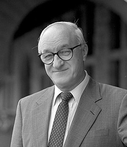

Albert Bandura

Precursor: Albert Bandura
Aportes: Desarrolló la teoría del aprendizaje social, que enfatiza la importancia de la observación y la imitación en el aprendizaje.
Enfoque e Ideas Principales: Bandura propuso que el aprendizaje ocurre no solo a través de la experiencia directa, sino también mediante la observación de los demás. Introdujo el concepto de autoeficacia.
Diferencias y Similitudes: A diferencia de las teorías que se centran en el aprendizaje por refuerzo, la teoría de Bandura destaca el papel de la modelación y la observación.
Abordaje Terapéutico: La terapia basada en el aprendizaje social se centra en el modelado y la observación para cambiar comportamientos y aumentar la autoeficacia.